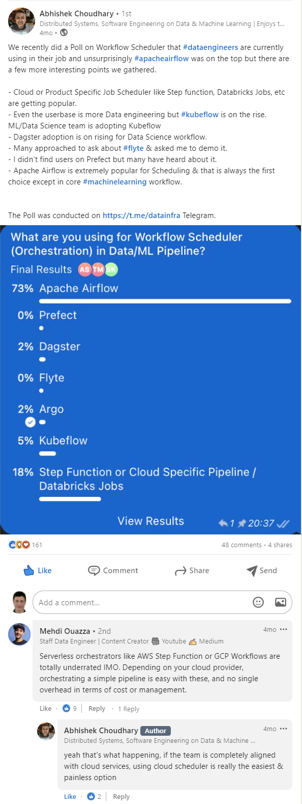

Machine Learning Ops (MLOps) and Data Science¶
- Introduction. MLOps
- MLOps Roadmap
- Blogs
- ML Infra
- Object Detection Libraries
- MLFlow
- Kubeflow
- Flyte
- AWS ML
- Azure ML
- Databricks
- KServe Cloud Native Model Server
- Data Science
- Machine Learning workloads in kubernetes using Nix and NVIDIA. Running NVIDIA GPUs on Kubernetes
- Meta LLama
- Other Tools
- Debugging ML Jobs
- Samples
- ML Courses
- ML Competitions and Challenges
- Polls
- Tweets
Introduction. MLOps¶
- cd.foundation: Announcing the CD Foundation MLOps SIG
- dafriedman97.github.io: Machine Learning from Scratch Derivations in Concept and Code.
- cortex.dev: How to build a pipeline to retrain and deploy models
- github: A very Long never ending Learning around Data Engineering & Machine Learning
- towardsdatascience.com: A Kubernetes architecture for machine learning web-application deployments Use Kubernetes to reduce machine learning infrastructure costs and scale resources with ease.
- cloud.google.com: How to use a machine learning model from a Google Sheet using BigQuery ML
- itnext.io: Building ML Componentes on Kubernetes
- towardsdatascience.com: Deploying An ML Model With FastAPI — A Succinct Guide
- cloudblogs.microsoft.com: Simple steps to create scalable processes to deploy ML models as microservices
- ML Platform Workshop Example code for a basic ML Platform based on Pulumi, FastAPI, DVC, MLFlow and more
- rubrix A free and open-source tool to explore, label, and monitor data for NLP projects.
- towardsdatascience.com: Automatically Generate Machine Learning Code with Just a Few Clicks Using Traingenerator to easily create PyTorch and scikit-learn template codes for machine learning model training
- towardsdatascience.com: Schemafull streaming data processing in ML pipelines Making containerized Python streaming data pipelines leverage schemas for data validation using Kafka with AVRO and Schema Registry
- analyticsindiamag.com: Top tools for enabling CI/CD in ML pipelines
- towardsdatascience.com: Step-by-step Approach to Build Your Machine Learning API Using Fast API A fast and simple approach to serve your model as an API
- ravirajag.dev: MLOps Basics - Week 10: Summary
- ==mikeroyal/Kubernetes-Guide: Machine Learning== 🌟
- medium.com/workday-engineering: Implementing a Fully Automated Sharding Strategy on Kubernetes for Multi-tenanted Machine Learning Applications
- ==medium.com/globant: Advantages of Deploying Machine Learning models with Kubernetes== 🌟
- medium.com/pythoneers: MLOps: Tool Stack Requirement in Machine Learning Pipeline Tools and technologies in machine learning lifecycle
- medium.com/formaloo: How no-code platforms are democratizing data science and software development 🌟
- towardsdatascience.com: From Jupyter Notebooks to Real-life: MLOps 🌟 Why is it a must-have?
- datarevenue.com: Airflow vs. Luigi vs. Argo vs. MLFlow vs. KubeFlow Choosing a task orchestration tool
- infoworld.com: 13 open source projects transforming AI and machine learning From deepfakes to natural language processing and more, the open source world is ripe with projects to support software development on the frontiers of artificial intelligence and machine learning.
- towardsdatascience.com: From Dev to Deployment: An End to End Sentiment Classifier App with MLflow, SageMaker, and Streamlit In this tutorial, we’ll build an NLP app starting from DagsHub-MLflow, then diving into deployment in SageMaker and EC2 with the front end in Streamlit.
- elconfidencial.com: La batalla entre Google y Meta que nadie esperaba: revolucionar la biología 🌟 El sistema AlphaFold de Google revela la estructura en 3D de las proteínas y ya es utilizado por miles de biólogos, pero Meta contraataca con otro algoritmo. ¿Cuál es mejor?
- swirlai.substack.com: SAI #08: Request-Response Model Deployment - The MLOps Way, Spark - Executor Memory Structure and more... 🌟
- about.gitlab.com: How is AI/ML changing DevOps?
- youtube: Making Friends with Machine Learning | Cassie Kozyrkov | playlist 🌟
- openai.com: Scaling Kubernetes to 7,500 nodes 🌟 We’ve scaled Kubernetes clusters to 7,500 nodes, producing a scalable infrastructure for large models like GPT-3, CLIP, and DALL·E, but also for rapid small-scale iterative research such as Scaling Laws for Neural Language Models.
- huyenchip.com: Building LLM applications for production
- medium.com/@study.uttam: Main Challenges of Machine Learning
- learn.microsoft.com: Machine Learning operations maturity model 🌟
- medium.com/ai-hero: Streamlining Machine Learning Operations (MLOps) with Kubernetes and Terraform Leveraging Terraform to Simplify AWS EKS Cluster Setup for Exploring Declarative ML Tools
- medium.com/@karanshingde: Machine Learning in Production— Your Comprehensive 101 Practical Guide
- marvelousmlops.substack.com: CI/CD for MLOps on GitLab (part 1) Code your way to your first CI pipeline
- medium.com/aiguys: MLOps: Serving AI apps to million users
- marvelousmlops.substack.com: How to sell MLOps in large Organizations
- marvelousmlops.substack.com: MLOps roadmap 2024
- towardsdatascience.com: Deploying LLM Apps to AWS, the Open-Source Self-Service Way A step-by-step guide on deploying LlamaIndex RAGs to AWS ECS fargate
- axelmendoza.com: The Ultimate Guide To ML Model Deployment In 2024 Explore the top ML model deployment tools of 2024 with this comprehensive guide. Uncover insights on Vertex AI, AWS Sagemaker, Seldon, KServe for successful ML projects.
- towardsdatascience.com: Build Machine Learning Pipelines with Airflow and Mlflow: Reservation Cancellation Forecasting Learn how to create reproducible and ready-for-production Machine Learning pipelines through a Senior Machine Learning assignment
- marvelousmlops.substack.com: Technical roles in Data Science: Who is doing what?
- marvelousmlops.substack.com: Traceability & Reproducibility
- marvelousmlops.substack.com: Learn Machine Learning and Neural Networks without Frameworks
- ==seattledataguy.substack.com: Data Engineering Vs Machine Learning Pipelines==
- semaphoreci.com: Why Do We Need DevOps for ML Data?
- aiml.com: Large Language Models Quiz (Medium)
- ==medium.com/@samiullah6799: Different Roles in MLOps==
- ==dev.to/pavanbelagatti: Deploy Any AI/ML Application On Kubernetes: A Step-by-Step Guide!==
- marvelousmlops.substack.com: Sharpen your cookiecutter: speed up repo creation with workflows
- decodingml.substack.com: How to ensure your models are fail-safe in production? Effectively monitor model serving stacks at scale, extracting key insights from their behaviour under large loads.
- ==freecodecamp.org: MLOps Course – Learn to Build Machine Learning Production Grade Projects==
- medium.com/@kevin30101999: Machine Learning Pipeline using Argo workflow 🌟
MLOps Roadmap¶
- ==roadmap.sh: MLOps roadmap== Roadmap to learn about MLOps
Blogs¶
- Marvelous MLOps Substack
- decodingml.substack.com: Decoding ML Newsletter Join for battle-tested content on designing, coding, and deploying production-grade ML & MLOps systems. Every week. For FREE.
ML Infra¶
- ==youtube.com: Optimizing LLM Training with Airbnb's Next-Gen ML Platform==
- ==Ray== is an open-source unified framework for scaling AI and Python applications. It provides the compute layer for parallel processing so that you don’t need to be a distributed systems expert.
Object Detection Libraries¶
MLFlow¶
- https://mlflow.org
- artifacthub.io: mlflow-server A Helm chart for MLFlow On Kubernetes
- pypi.org/project/airflow-provider-mlflow An Apache Airflow provider to interact with MLflow using Operators and Hooks
Kubeflow¶
- kubeflow The Machine Learning Toolkit for Kubernetes
- infracloud.io: Machine Learning Orchestration on Kubernetes using Kubeflow
- blog.devgenius.io: Kubeflow Cloud Deployment (AWS) How do you deploy Kubeflow on AWS? Kubeflow is resource-intensive and deploying it locally means that you might not have enough resources to run your end-to-end machine learning pipeline. In this article you will learn how to deploy Kubeflow in AWS.
- joseprsm.medium.com: How to build Machine Learning models that train themselves
- medium.com/dkatalis: Creating a Mutating Webhook for Great Good! Or: how to automatically provision Pods on a specific node pool In this tutorial, you will learn how to automatically schedule Kubeflow pipeline Pods from any number of namespaces on dedicated GKE node pools
Flyte¶
- https://flyte.org
- Union Cloud ML and Data Orchestration powered by Flyte
- mlops.community: MLOps with Flyte: The Convergence of Workflows Between Machine Learning and Engineering
- ==Machine Learning in Production. What does an end-to-end ML workflow look like in production? (transcript)== 🌟🌟🌟 - Play Recording
- Kelsey Hightower joined the @flyteorg team to discuss what ML looks like in the real world, from ingesting data to consuming ML models via an API.
- @kelseyhightower You can't go swimming in a #data_lake if you actually can't swim, right? You're going to drown. 🏊♂️
- @ketanumare Machine Learning products deteriorate in time. If you have the best model today it's not guaranteed to be the best model tomorrow.
- @thegautam It's hard to verify models before you put them in production. We need our systems to be fully reproducible, which is why an #orchestration_tool is important, running multiple models in parallel.
- @ketanumare We at @union_ai unify the extremely fragmented world of ML and give the choice to users when to use proprietary technology versus when to use open source. (1/2)
- @ketanumare #Flyte makes it seamless to work on #kubernetes with spark jobs, and that's a big use case, but you can also use @databricks. Similarly, we are working on Ray and you can also use @anyscalecompute. (2/2)
- @Ketanumare Most machine learning engineers are not distributed systems engineers. This becomes a challenge when you’re deploying models to production. Infrastructure abstraction is key to unlock your team’s potential.
- @ketanumare on #Machine_Learning workflows: Creating Machine Learning workflows is a team sport. 🤝
- @arnoxmp: A Machine Learning model is often a blackbox. If you encounter new data, do a test run first.
- @fabio_graetz In classical software engineering the only thing that changes is the code, in a ML system the data can change. You need to version and test data changes.
- @Forcebananza This is actually one of the reasons I really like using #Flyte. You can map a cell in a notebook to its own task, and they're really easy to compose and reuse and copy and paste around. (1/2)
- @Forcebananza Jupyter notebooks are great for iterating, but moving more towards a standard software engineering workflow and making that easy enough for data scientists is really really important.(2/2)
- @jganoff Taking snapshots of petabytes of data is expensive, there are tools that version a dataset without having to copy it. Having metadata separate from the data itself allows you to treat a version of a dataset as if it were code.
- @SMT_Solvers In F500s it is mostly document OCR. Usually batch jobs - an API wouldn’t work - you need the binaries on the server even if it is a sidecar Docker container. One org (not mine) blows $$ doing network transfer from AWS to GCP when GCP could license their OCR in a container.
- @Forcebananza Flyte creates a way for all these teams to work together partially because writing workflows, writing reusable components… is actually simple enough for data scientists and data engineers to work with.
- @kelseyhightower We're now at a stage where we can start to leverage systems like https://flyte.org to give us more of an opinionated end-to-end workflow. What we call #ML can become a real discipline where practitioners can use a common set of terms and practices.
- stackoverflow.com: How is Flyte tailored to "Data and Machine Learning"?
- union.ai: Production-Grade ML Pipelines: Flyte™ vs. Kubeflow Kubeflow and Flyte are both production-grade, Kubernetes-native orchestrators for machine learning. Which is best for ML engineers? Check out this head-to-head comparison.
- mlops.community: MLOps Simplified: orchestrating ML pipelines with infrastructure abstraction. Enabled by Flyte
- medium.com/@timleonardDS: Who Let the DAGs out? Register an External DAG with Flyte (Chapter 3)
AWS ML¶
- aws.amazon.com: MLOps foundation roadmap for enterprises with Amazon SageMaker
- aws.amazon.com: Promote pipelines in a multi-environment setup using Amazon SageMaker Model Registry, HashiCorp Terraform, GitHub, and Jenkins CI/CD
Azure ML¶
- docs.microsoft.com: MLflow and Azure Machine Learning One of the open-source projects that has made #ML better is MLFlow. Microsoft is expanding support for APIs, no-code deployment for MLflow models in real-time/batch managed inference, curated MLflow settings, and CLI v2 integrations.
- bea.stollnitz.com: Creating batch endpoints in Azure ML
- Suppose you’ve trained a machine learning model to accomplish some task, and you’d now like to provide that model’s inference capabilities as a service. Maybe you’re writing an application of your own that will rely on this service, or perhaps you want to make the service available to others. This is the purpose of endpoints — they provide a simple web-based API for feeding data to your model and getting back inference results.
- Azure ML currently supports three types of endpoints: batch endpoints, Kubernetes online endpoints, and managed online endpoints. I’m going to focus on batch endpoints in this post, but let me start by explaining how the three types differ.
- blog.devops.dev: Mastering Machine Learning at Scale with Azure Machine Learning Accelerate Model Development, Deployment, and Monitoring at Scale
- youtube: Deploy Convolutional Neural Network (CNN) on Azure with Python | Deep Learning Deployment | MLOPS
- ==learn.microsoft.com: Azure Well-Architected Framework perspective on Azure Machine Learning==
Databricks¶
- marvelousmlops.substack.com: Model serving architectures on Databricks
- medium.com/sync-computing: Top 9 Lessons Learned about Databricks Jobs Serverless We test the latest Databricks Jobs serverless feature and present our pros and cons to help you make the best decision
KServe Cloud Native Model Server¶
- thenewstack.io: KServe: A Robust and Extensible Cloud Native Model Server
- medium.com/bakdata: Scalable Machine Learning with Kafka Streams and KServe In this blog post, you'll learn how to use Apache Kafka and Kafka Streams in combination with the KServe inference platform for an easy integration of ML models with data streams
Data Science¶
- analyticsvidhya.com: Bring DevOps To Data Science With MLOps
- analyticsindiamag.com: Is coding necessary to work as a data scientist? Non-programmers with a no-coding background can have a glorious career in data science and programming, and coding knowledge is more like a skill and not a criterion.
- redhat.com: Introducing Red Hat OpenShift Data Science
- towardsdatascience.com: From DevOps to MLOPS: Integrate Machine Learning Models using Jenkins and Docker How to automate data science code with Jenkins and Docker: MLOps = ML + DEV + OPS
Machine Learning workloads in kubernetes using Nix and NVIDIA. Running NVIDIA GPUs on Kubernetes¶
- canvatechblog.com: Supporting GPU-accelerated Machine Learning with Kubernetes and Nix In this article, you'll learn how to package and run machine learning workloads in Kubernetes using Nix and NVIDIA
- Nix
- github.com/NVIDIA/nvidia-docker: NVIDIA/nvidia-docker/volumes.go NVIDIA’s documentation is disappointingly evasive on what the “driver” is, but we find a good answer in their official source code.
- ==catalog.ngc.nvidia.com: NVIDIA GPU Operator - Helm chart== 🌟🌟🌟
- jimangel.io: A Practical Guide to Running NVIDIA GPUs on Kubernetes Setup an NVIDIA RTX GPU on bare-metal Kubernetes, covering driver installation on Ubuntu 22.04, configuration, and troubleshooting.
- huggingface.co: Implementing Fractional GPUs in Kubernetes with Aliyun Scheduler
Meta LLama¶
- medium.com/@bchenjh: Distributed full fine-tuning of Llama2 on Kubernetes
- ==github.com/meta-llama/llama-recipes==
Other Tools¶
- bodywork-ml/bodywork-core: Bodywork is a command line tool that deploys machine learning pipelines to Kubernetes. It takes care of everything to do with containers and orchestration, so that you don't have to. It is a more lightweight and simpler alternative when compared to tools like KubeFlow
- learn.iterative.ai: Iterative Tools for Data Scientists & Analysts All the things you need to know to take you from your notebook to production with Iterative tools!
- VSCode DVC:
- DVC Machine learning experiment management with tracking, plots, and data versioning.
- docs.microsoft.com: Machine Learning Experimentation in VS Code with DVC Extension
- tensorchord/envd: Reproducible development environment for AI/ML 🌟 envd (ɪnˈvdɪ) is a command-line tool that helps you create the container-based development environment for AI/ML. https://envd.tensorchord.ai/
- postgresml/postgresml 🌟 PostgresML is an end-to-end machine learning system. It enables you to train models and make online predictions using only SQL, without your data ever leaving your favorite database.
- blog.devgenius.io: Training model with Jenkins using docker: MLOPS
- vaex.io An ML Ready Fast DataFrame for Python
- https://pypi.org/project/vaex/
- thenewstack.io: 7 Must-Have Python Tools for ML Devs and Data Scientists 🌟 Python has an easy learning curve, however there are a range of development tools to consider if you're to use Python to its full potential.
- github.com/SymbioticLab/Oobleck: Oobleck - Resilient Distributed Training Framework - techxplore.com: Open-source training framework increases the speed of large language model pre-training when failures arise
- github.com/CASIA-IVA-Lab/FastSAM Fast Segment Anything
- github.com/VikParuchuri/surya Accurate line-level text detection and recognition (OCR) in any language
- github.com/aimhubio/aim An easy-to-use & supercharged open-source experiment tracker. Aim logs your training runs and any AI Metadata, enables a beautiful UI to compare, observe them and an API to query them programmatically.
- ==github.com/XuehaiPan/nvitop== 🌟 An interactive NVIDIA-GPU process viewer and beyond, the one-stop solution for GPU process management
- ==github.com/Netflix/metaflow== 🌟 Build and manage real-life ML, AI, and data science projects with ease!
- github.com/decodingml: Real-time news search engine using Upstash Kafka and Vector DB
- zenml.io: ZenML
- zenml.io/integrations: Explore the MLOps Landscape with ZenML ZenML integrates with many different third-party tools. Once code is organized into a ZenML pipeline, you can supercharge your ML workflows with the best-in-class solutions from various MLOps areas.
- registry.terraform.io/modules/zenml-io/zenml-stack
Debugging ML Jobs¶
- betterprogramming.pub: Attach a Visual Debugger to ML-training Jobs on Kubernetes
- As machine learning models grow in size and complexity, cloud resources are more and more often required for training. However, debugging training jobs running in the cloud can be time-consuming and challenging. In this blog post, we’ll explore how to attach a visual debugger in VSCode to a remote deep learning training environment, making debugging simpler and more efficient.
- In this tutorial, you'll deploy a local Kubernetes cluster with k3d, install the MLOps workflow orchestration engine Flyte, create a simple training workflow, and finally visually debug it using VSCode and debugpy
Samples¶
- fepegar/vesseg Brain vessel segmentation using 3D convolutional neural networks
- github.com/10tanmay100: MEDICAL-DATA-PROJECT-END2END-WITH-FEW-MLOPS We are on a mission to transform medical data into actionable insights using the power of machine learning. Whether you are a data scientist, healthcare professional, or an enthusiast in the field, your contributions and ideas are invaluable to us. Join us in making a difference!
ML Courses¶
- ==dair-ai/ML-Course-Notes: ML Course Notes== 🌟 🎓 Sharing course notes on all topics related to machine learning, NLP, and AI.
ML Competitions and Challenges¶
- Kaggle Competitions
- kaggle.com: Sports Car Prices dataset
- isic-archive.com
- freecodecamp.org: How to Download a Kaggle Dataset Directly to a Google Colab Notebook
Polls¶
Click to expand!

Tweets¶
Click to expand!
To my JVM friends looking to explore Machine Learning techniques - you don’t necessarily have to learn Python to do that. There are libraries you can use from the comfort of your JVM environment. 🧵👇
— Maria Khalusova (@mariaKhalusova) November 26, 2020
You don't need to go to a university to learn machine learning - you can do it from your living room, for completely free.
— Tivadar Danka (@TivadarDanka) September 21, 2021
Here is an extensive list of curated free courses and tutorials, from beginner to advanced. ↓
(Trust me, you want to bookmark this tweet.)
I started taking data science courses last year, after studying and coding for at least 10 hours 6 days a week and doing several ML projects alongside data analysis projects, I finally got my first data analyst offer from a Nigerian bank last week after countless rejections
— Sam (@SamsonTontoye) February 20, 2022
Deep Neural Networks are used for many applications. One I'm particularly fond of is medical imaging. A trained model can process the input thanks to the activation functions propagating through a network of perceptrons and generating the output of interest.#NeuralNets #Medical pic.twitter.com/vPwm0TfHnn
— Valerio Pergola (@valerio_pergola) July 6, 2022
#3D intracranial artery segmentation using a convolutional neural networks #CNN - #opensource > https://t.co/Z2WDp2UOl3 | #python #TensorFlow #DeepLearning #MachineLearning #Nvidia #GPU #brain #medical #conda #Neurology #Artificial_Intelligence #medical_imaging #Nifti pic.twitter.com/eKrBBuFxSy
— NewUlmDesign (@ulmdesign) July 7, 2022
— nubenetes (@nubenetes) July 22, 2022
@kelseyhightower We're now at a stage where we can start to leverage systems like #Flyte to give us more of an opinionated end-to-end workflow. What we call #ML can become a real discipline where practitioners can use a common set of terms and practices.#KelseyTakesFlyte #MLOps
— Flyte (@flyteorg) July 22, 2022
If you're not utilizing AI, you're falling behind.
— Nikki Siapno (@NikkiSiapno) October 24, 2022
Here are 7 free AI tools that'll save you hours of work:
Machine Learning will be one of the most sought-after professions this decade.
— Simon (@simonholdorf) February 25, 2023
Learn & practice ML for free with these outstanding resources and earn certificates for your resume:
Building robust #data and #ML pipelines by tapping into the power of multiple tools and integrating them should not be a challenging task.
— Flyte (@flyteorg) March 9, 2023
With Flyte, you can simplify the entire process of developing data and ML pipelines through access to more than 30 integrations. ✨ pic.twitter.com/UBege732tQ